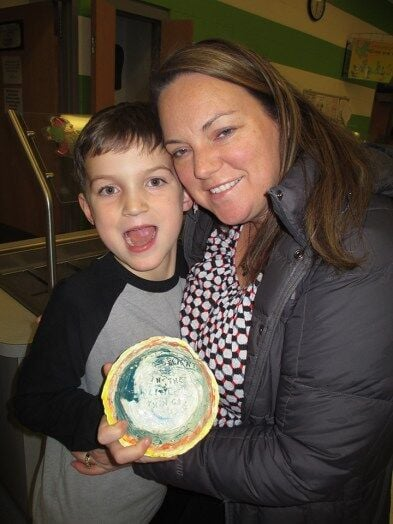

Personalized Welcome
Loading time and weather...
About Me
Hello! My name is Nick Keuten, and I am a student focused on an Associates Degree in Technological Sciences. I am building this site as part of my Front-End Web Technologies course as a final project assignment. Also that image is a photo of me although it is not the most professional for a website about me it is the one image that I found on myself online. I am on the left at it was about 10 years ago now when that photo was taken.
My Interests and Hobbies
- Video Games: One of my main hobbies is definitely Video Games, which is the main reason why I wanted to do web development although they are not the same it was in the coding field and something that I had a big interest in.
- Soccer Referee: I am currently a soccer referee and love my job it has been one of my main interests for a while. Soccer has always been a sport I enjoyed to play as a kid and was the big thing I wanted to make sure to consistently do. That unfortunately stopped in high school due to not making the team but I ended up just trying to become a soccer referee and be connected with the sport and it worked a whole lot better.
- Coding/Modding: This section really continues with the first one but I believe it is a little bit more different and deserved its own section. I wanted to learn to code to also mod my nintendo switch and other modded games on my pc like rounds or stick fight. This interest is definitely the most recent interest that came to mind but it is now becoming a main passion of mine and want to continue doing. It also shows me how much more I can learn in this field of study.